Wir erhalten Ihre Zähne.
Fachzahnärztliche Praxis für Parodontologie in Steinfurt-Borghorst. Dr. Christina Elberg und ihr Team behandeln Zahnfleisch und Zahnhalteapparat, damit Ihre eigenen Zähne lange halten.
SprechzeitenMo, Di, Do 8–12 und 14–18 Uhr
Für Patientinnen und Patienten
Termin, Parodontitis verstehen, Weg zur Praxis.
Für überweisende Praxen
Überweisung, Rückbericht, direkte Ansprechpartnerin.

Parodontitis, in Millimetern erklärt
Zwischen Zahn und Zahnfleisch liegt eine feine Furche. Wird sie tiefer, spricht man von einer Zahnfleischtasche. Wie tief sie ist, misst Ihre Zahnärztin mit einer dünnen Sonde. Schieben Sie den Regler und sehen Sie, was sich dabei im Kiefer verändert.
Gesundes Zahnfleisch
Bis etwa 3 Millimeter ist normal. Das Zahnfleisch liegt fest am Zahn, das schwarze Band der Sonde bleibt über dem Rand sichtbar.
Die Sonde hat eine kleine Kugel an der Spitze und ein schwarzes Band zwischen 3,5 und 5,5 Millimetern. Daran liest Ihre Zahnärztin ab, wie tief die Furche ist.
Diese Messung heißt Parodontaler Screening-Index (PSI). Gesetzlich Versicherte haben alle zwei Jahre Anspruch darauf. Gemessen wird an allen Zähnen, notiert wird der höchste Wert je Kieferabschnitt.
Schnittbild maßstäblich vereinfacht. Grundlage: Behandlungsrichtlinie des Gemeinsamen Bundesausschusses und BEMA-Nr. 04 (Stand 2021).
Woran Sie eine Parodontitis bemerken können
- Zahnfleischblutenbeim Putzen oder beim Essen
- Gerötetes Zahnfleischgeschwollen statt blassrosa
- Mundgeruchder trotz Putzen bleibt
- Freiliegende Zahnhälsedie Zähne wirken länger
- Lockere Zähneoder Lücken, die neu entstehen
So läuft die Behandlung ab
Seit Juli 2021 ist die systematische Behandlung für gesetzlich Versicherte in festen Schritten geregelt.
- Schritt 1Befund
Taschentiefen an jedem Zahn, Röntgenbild, Ihre Vorgeschichte.
- Schritt 2Gespräch und Anleitung
Was wir vorhaben, und wie Sie zu Hause am besten putzen.
- Schritt 3Gründliche Reinigung
Wir säubern die Zahnfleischtaschen unter örtlicher Betäubung.
- nach 3 bis 6 MonatenKontrolle
Wir messen erneut. Bei tiefen Resttaschen ist ein kleiner Eingriff möglich.
- 2 JahreNachsorge
Regelmäßige Termine, damit das Ergebnis hält. Der Abstand richtet sich nach Ihrem Risiko.
Was die Kasse übernimmt: Die gesetzliche Krankenkasse trägt die systematische Behandlung, wenn sie den Behandlungsplan vorher genehmigt hat. Den Antrag stellen wir für Sie.
Quelle: Richtlinie des Gemeinsamen Bundesausschusses zur systematischen Behandlung von Parodontitis, gültig seit 1.7.2021; Übersicht der KZBV.
Termin und Sprechzeiten
Einen Termin zur Kontrolle buchen Sie rund um die Uhr online. Beantworten Sie drei kurze Fragen, dann sehen Sie Ihren Weg Schritt für Schritt.
Welcher Weg passt zu Ihnen?
Tippen Sie Ihre Antworten an. Danach sehen Sie nur die Schritte, die für Sie gelten.
Ihre Anleitung
Zur AnleitungSprechzeiten
| Montag | 8:00–12:00 14:00–18:00 |
|---|---|
| Dienstag | 8:00–12:00 14:00–18:00 |
| Mittwoch | 8:00–12:00 |
| Donnerstag | 8:00–12:00 14:00–18:00 |
| Freitag | 8:00–14:00 |
Termine nach Vereinbarung auch außerhalb dieser Zeiten.
Anfahrt
- Adresse
- Kolpingstraße 1, 2. Obergeschoss
48565 Steinfurt-Borghorst - Route
- Route in Google Maps öffnen
Zahnärztlicher Notdienst
Außerhalb der Sprechzeiten nennt Ihnen die zentrale Nummer die Praxis, die gerade Dienst hat:
01805 98 67 00 (14 ct/Min. aus dem Festnetz)
Notdienst online suchen · Bei Lebensgefahr: 112
Ihre Anleitung
-
CLICKDOC öffnen
Lesen Sie bitte erst alle Schritte bis zum Ende. Der Knopf öffnet die Buchung in einem neuen Fenster, diese Anleitung sehen Sie dann nicht mehr.
CLICKDOC öffnen (öffnet ein neues Fenster)
Erscheint ein Hinweis zu Cookies, tippen Sie auf NUR NOTWENDIGE. Buchen können Sie trotzdem.
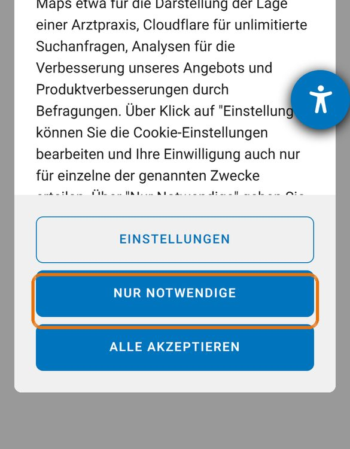
-
Die erste Frage mit „Ja“ beantworten
CLICKDOC fragt: „Sind Sie in dieser Einrichtung bereits in Behandlung?“ Tippen Sie auf Ja.
Gemeint ist die Person, die zum Termin kommt, also zum Beispiel auch Ihr Kind.
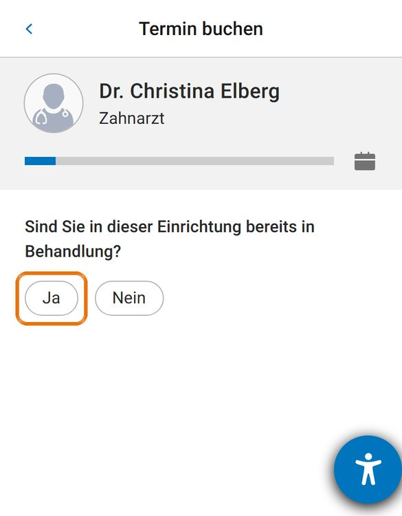
-
Die erste Frage mit „Nein“ beantworten
CLICKDOC fragt: „Sind Sie in dieser Einrichtung bereits in Behandlung?“ Tippen Sie auf Nein.
Gemeint ist die Person, die zum Termin kommt, also zum Beispiel auch Ihr Kind.
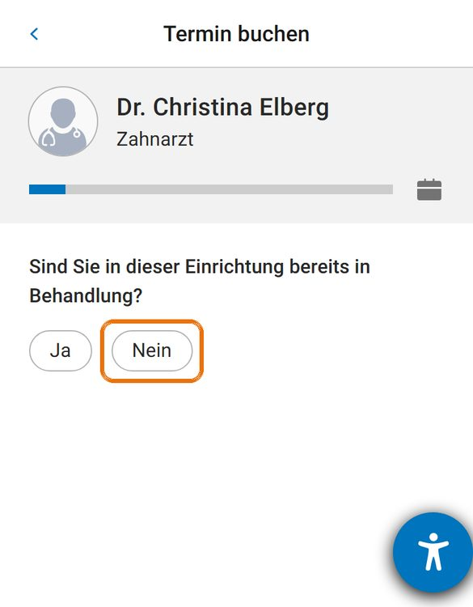
-
„Vor-Ort-Termin“ antippen
Darunter erscheint die nächste Zeile: „Bitte wählen Sie die Art der Behandlung“. Tippen Sie auf Vor-Ort-Termin.
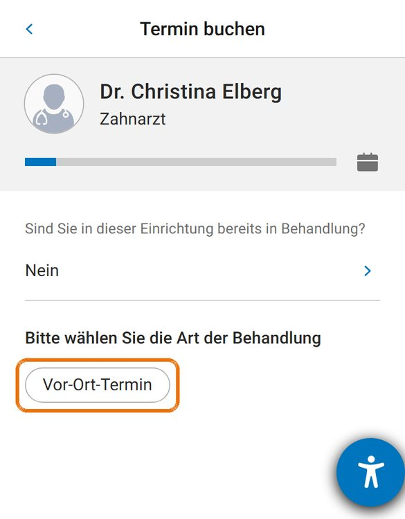
-
„Zahnarzt“ antippen
Bei „Bitte wählen Sie das Fachgebiet“ tippen Sie auf Zahnarzt.
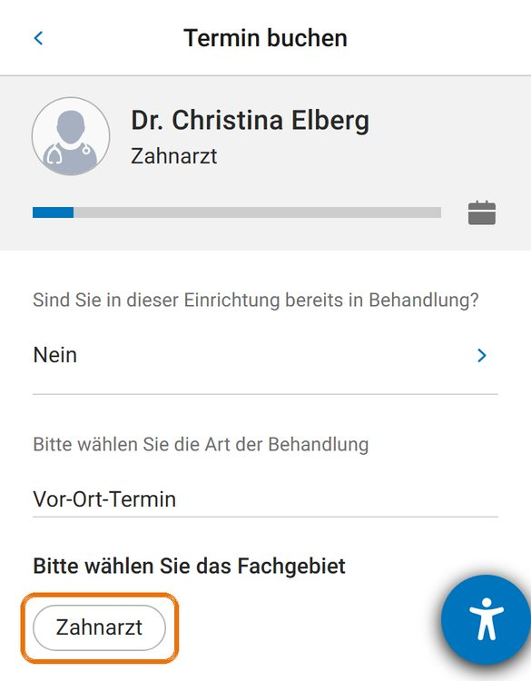
-
„Kontrolluntersuchung“ antippen
Bei „Bitte wählen Sie die Terminart“ tippen Sie auf Kontrolluntersuchung.
Online gibt es bei uns diese eine Terminart. Für alles andere erreichen Sie uns unter 02552 1550.
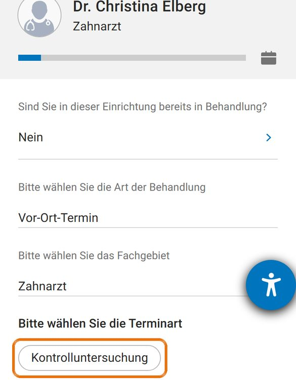
-
Tag und Uhrzeit wählen
Wischen Sie nach unten bis zu einem Tag mit blauen Uhrzeiten und tippen Sie auf die Uhrzeit, die Ihnen passt.
Ein Strich unter einem Tag bedeutet: Online ist dort nichts frei. Der erste freie Termin kann einige Wochen entfernt sein.
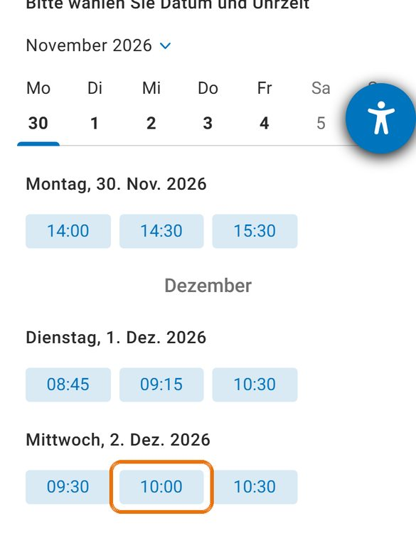
-
„Kostenlos registrieren“ antippen
CLICKDOC zeigt Ihren Termin und oben den Hinweis „Ihr Termin ist noch nicht vereinbart“. Das ist richtig so: Zum Abschließen brauchen Sie ein kostenloses Konto. Tippen Sie auf Kostenlos registrieren.
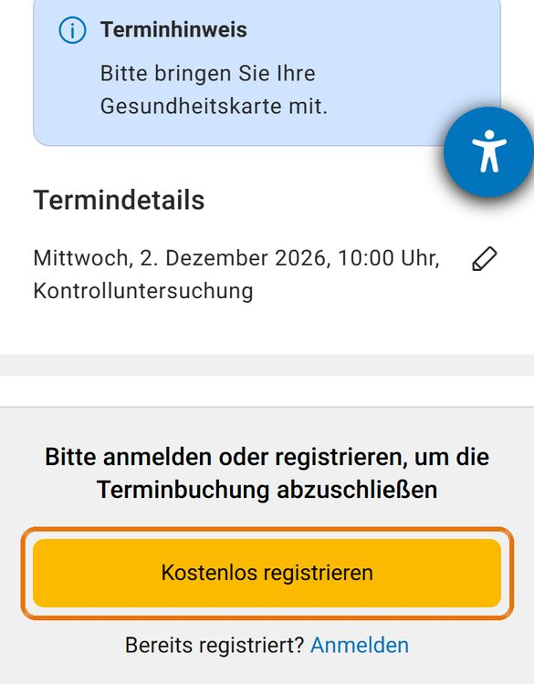
-
Ihre Angaben eintragen
Tragen Sie Vorname, Nachname, Geburtstag, E-Mail-Adresse und Geschlecht ein. Dann wählen Sie ein Passwort und tippen es zweimal ein.
Das Passwort braucht: mindestens 10 Zeichen, große und kleine Buchstaben, eine Zahl und ein Sonderzeichen, zum Beispiel ein Ausrufezeichen.
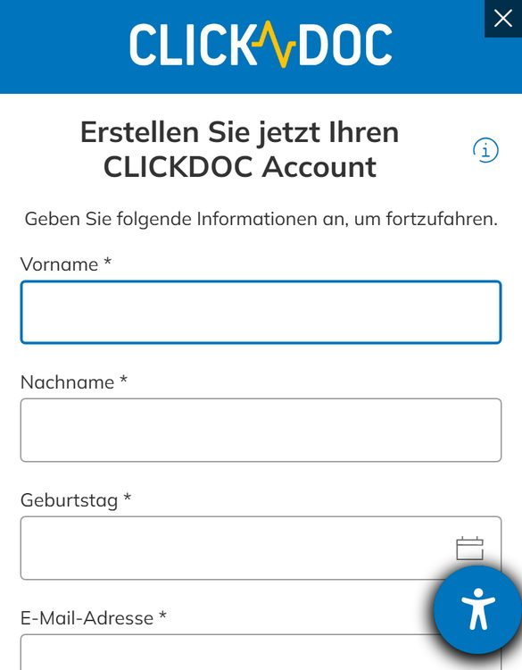
-
Haken setzen, dann „REGISTRIEREN“
Unter den Feldern steht „Ich willige ein, dass meine Gesundheitsdaten …“. Setzen Sie dort den Haken, ohne ihn bleibt der Knopf grau. Tippen Sie dann auf REGISTRIEREN.
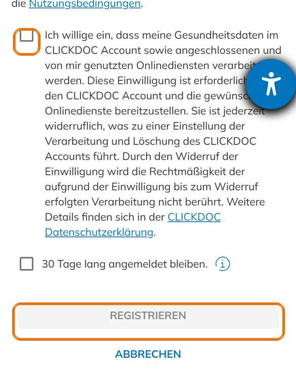
-
„Anmelden“ antippen
CLICKDOC zeigt Ihren Termin und oben den Hinweis „Ihr Termin ist noch nicht vereinbart“. Das ist richtig so. Tippen Sie ganz unten auf das blaue Wort Anmelden.
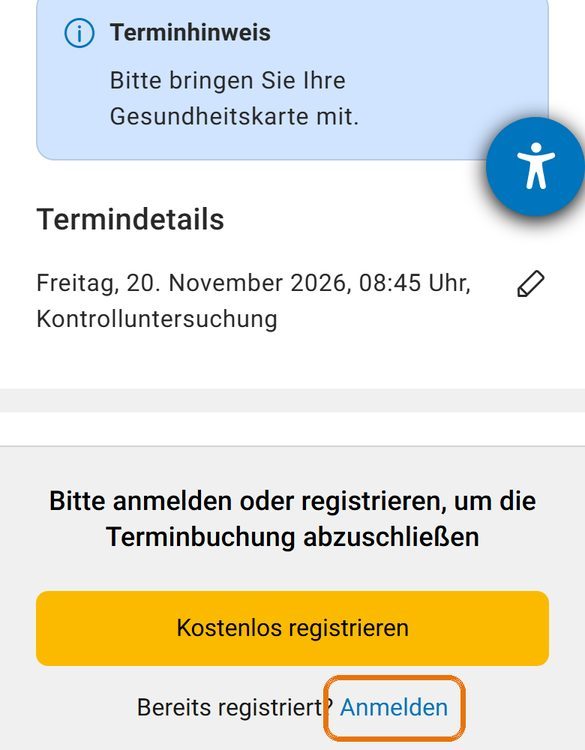
-
E-Mail-Adresse und Passwort eintragen
Tragen Sie die E-Mail-Adresse und das Passwort Ihres CLICKDOC-Kontos ein und tippen Sie auf ANMELDEN.
Passwort nicht mehr im Kopf? Tippen Sie auf „Passwort vergessen?“, CLICKDOC schickt Ihnen eine E-Mail.
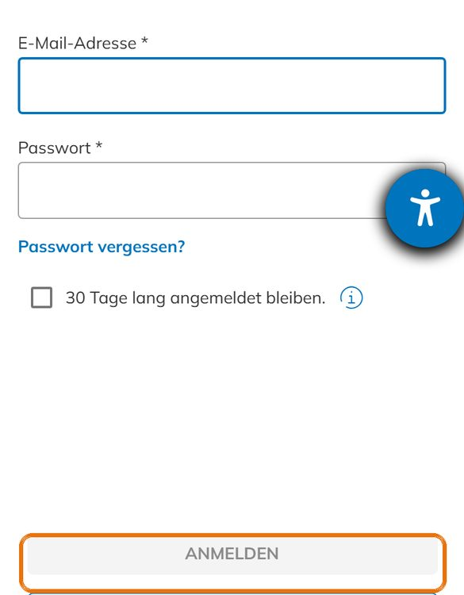
-
Buchung abschließen
Danach führt CLICKDOC Sie zurück zu Ihrem Termin. Schließen Sie die Buchung dort ab.
Zum Termin mitbringen: Ihre Gesundheitskarte.
-
Den ersten Termin am Telefon vereinbaren
Für die Behandlung einer Parodontitis plant unsere Anmeldung mehr Zeit ein als für eine Kontrolle. Online gibt es bei uns nur die Kontrolluntersuchung, deshalb rufen Sie uns bitte an.
-
Das bringen Sie mit
- die Überweisung Ihrer Zahnärztin oder Ihres Zahnarztes
- Ihre Gesundheitskarte
- eine Liste Ihrer Medikamente
- Röntgenbilder, wenn Sie welche bekommen haben
-
So geht es nach dem ersten Termin weiter
Die Behandlung läuft in fünf festen Schritten ab, vom Befund bis zur Nachsorge.
-
Während der Sprechzeiten: bitte anrufen
Sagen Sie am Telefon, dass Sie Schmerzen haben. Die Anmeldung sucht den nächsten freien Termin für Sie.
-
Außerhalb der Sprechzeiten: zahnärztlicher Notdienst
Die zentrale Nummer nennt Ihnen die Praxis, die gerade Dienst hat.
14 ct/Min. aus dem Festnetz. Oder online: Notdienstsuche der Zahnärztekammer. Bei Lebensgefahr: 112.
Beispielansichten aus der Online-Buchung der Praxis bei CLICKDOC (CompuGroup Medical), Stand 10.11.2026. Markierungen hinzugefügt. Tage und Uhrzeiten sind Beispiele.
Für Kolleginnen und Kollegen
Wir bieten Ihnen eine partnerschaftliche Kooperation zu allen Fragestellungen der Parodontologie. Eine vertrauensvolle, persönliche Abstimmung mit Ihrer Praxis ist uns dabei sehr wichtig.
So überweisen Sie
- Überweisung mit Fragestellung mitgeben, gern mit Röntgenbild und PSI-Befund.
- Ihre Patientin vereinbart den Termin telefonisch unter 02552 1550.
- Eilt es, rufen Sie direkt an: Wir finden einen frühen Termin.
Was Sie uns schicken können
- Parodontitis, auch schwere und fortgeschrittene Fälle
- Minimalinvasive und mikrochirurgische Eingriffe unter Lupenbrille
- Aufbau von Knochendefekten
- Rezessionsdeckung bei freiliegenden Zahnhälsen
- Implantologie
Rückbericht an Ihre Praxis
- Nach dem Befund: Diagnose und Behandlungsplan
- Nach der Behandlung: Ergebnis und Empfehlung für die Nachsorge
- Ihre Patientin bleibt Ihre Patientin. Wir behandeln, was Sie überweisen.

Dr. med. dent. Christina Elberg
Fachzahnärztin für Parodontologie · Master of Oral Medicine in Implantology- 2004–2011Zahnklinik Münster (UKM), Zahnerhaltung und Parodontologie
- 2008–2011Weiterbildung zur Fachzahnärztin bei Prof. Dr. Ehmke
- 2011Prüfung vor der Zahnärztekammer Westfalen-Lippe
- MitgliedDGP, DGZMK, Berufsverband deutscher Parodontologen
Direkt erreichen
Lieber ein kurzes Gespräch von Praxis zu Praxis? Wir rufen Sie zurück.
Rückruf für Ihre PraxisIm Entwurf: Ablauf und Rückbericht sind ein Vorschlag und werden mit der Praxis abgestimmt.
Praxis und Team
Die Praxis liegt im 2. Obergeschoss. Wer warten muss, kann das auch draußen tun: Zum Wartebereich gehört eine Dachterrasse.


Dr. Christina Elberg
Fachzahnärztin für Parodontologie, Master of Oral Medicine in Implantology. Seit 2011 in der Praxis, zuerst gemeinsam mit ihrem Vater H.-J. Papendorf.

Simone Wernsmann
Zahnärztin und Zahntechnikerin.
Leistungen
- ParodontologieSchwerpunkt der Praxis
- Unterstützende ParodontitistherapieNachsorge, damit das Ergebnis hält
- Implantologiewenn ein Zahn doch verloren geht
- Professionelle ZahnreinigungVorsorge und Nachsorge
- EndodontieWurzelkanalbehandlung
- FüllungstherapieKunststoff, Keramik, Gold
- Zahnersatzfestsitzend und herausnehmbar
- Ästhetische Zahnheilkundefür ein natürliches Lächeln
- Kinderzahnheilkundemit eigenem Kinderstuhl
- Zahnheilkunde 60+Alterszahnmedizin
- Kieferorthopädie für Erwachsenemit In-Line®-Schienen
Altgold für den guten Zweck: Seit Jahren spendet die Praxis mit Kolleginnen und Kollegen im Kreis das Altgold ihrer Patienten, zum Beispiel an den Verein Herzenswünsche.
Nachricht an die Praxis
Für eine Terminfrage, einen Rückruf von Praxis zu Praxis oder Ihre Bewerbung. Wir melden uns während der Sprechzeiten.
Telefon
02552 1550
E-Mail
info@zahnarzt-elberg.de
Danke, Ihre Nachricht ist angekommen.
In der fertigen Website ginge sie jetzt verschlüsselt an die Anmeldung. Wir melden uns während der Sprechzeiten.
Entwurf: Es wurde nichts verschickt.